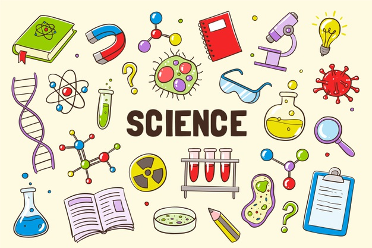
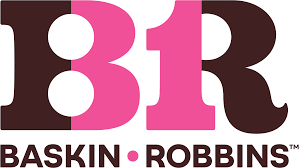
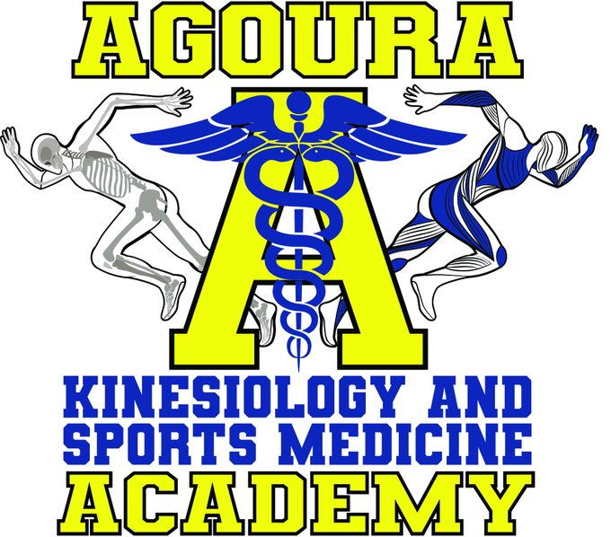
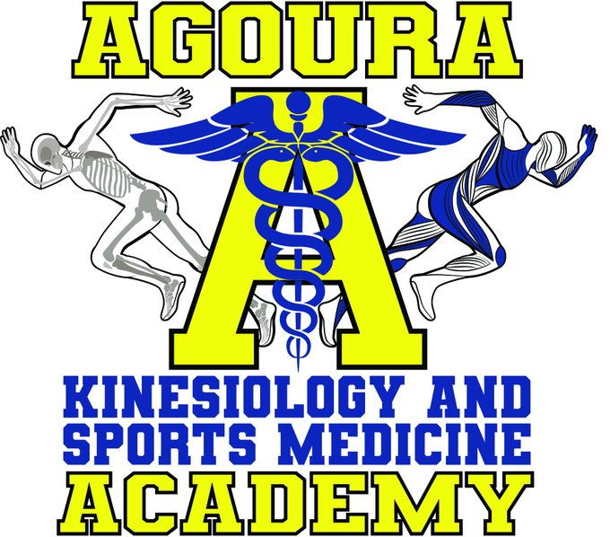
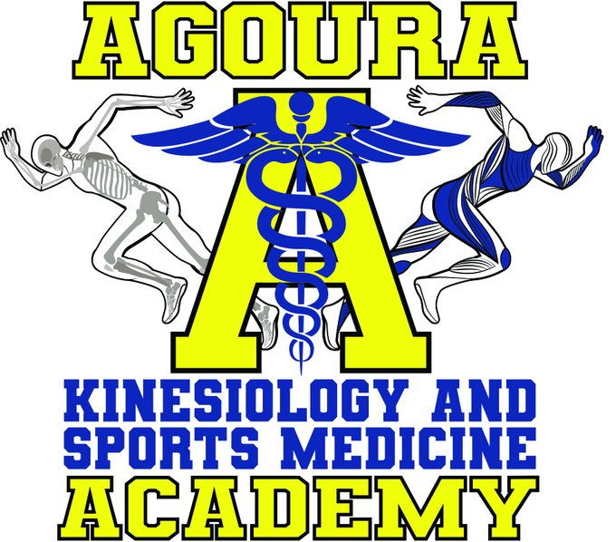

Riya Agashe
Hello, my name is Riya Agashe and I am a first year student at University of California Riverside. As a hardworking and dedicated student in high school and college, I hope to have a future in social work or in the field of medicine. I have always been inspired to be a part of the medical field after I graduate from university. As a former tutor, I excel at communicating and assisting those who need help. I have developed knowledge on how to be a leader and create a positive atmosphere in the workplace. I have good time management skills, and am able to stay on task without getting distracted. Working with kids also taught me patience and compassion. Tutoring was a great experience for me to learn how to manage my own challenges with people I am working with. Tutoring inspired me to work with kids and possibly in social work. In high school I was also co-president of a club that helped include students with special needs in on and off campus activities. It was a position that helped me become a leader within my school and also helped me pursue my interest in helping others and being in a position of power. As co president I held multiple responsibilities such as advertising, organizing, creating etc. I would have to advertise what activities we would do over the week, plan outside activities and help plan different ventures for a large group of people.
I have obtained a CPR certification, and have learnt about basic sports medicine as a Sports Medicine 3 student at Agoura High School. In Sports Medicine I have learnt how to treat several injuries, tape a wrist and ankle, and apply ice. I have also learnt how to react in emergency situations, follow proper protocol and understand the importance of HIPPA. I am well versed in medical procedures during an emergency or injury. I am able to stay level headed in an overwhelming situation and keep control. Sports Medicine inspired me to consider a future in medicine or science. I was able to learn a substantial amount about the human body and biology. My passion for science also came to use when I became a tutor for Science Honors Society in my high school. I would assist students when it came to subjects such as biology, sociology, environmental science and chemistry. It was another great opportunity for me to distinguish myself as a leader within my peers and help others succeed.
I also have work experience in the food service industry as a part time employee at Baskin Robbins. The job was a great experience for me to hone my skills in customer service and time management as well as navigating a nuanced and unfamiliar environment. Aside from being a summer job it was a wonderful opportunity for me to familiarize myself with a paying job and understand how jobs in food service function. I worked as a high school senior for around twelve weeks.
Experience
Kindergarter to 8th grade Tutor
• tutored students in math and english
• worked with reading skills for kindergarteners and algebra with older students
• worked online through pandemic
Cashier
• Responsible for checking out customers and checking cash register
• Scooped ice cream/made drinks
Sports Medicine Student
• Helped student athletes
• learnt emergency protocols for medical emergencies
• iced, taped and splinted injuries during games
• learnt about sports medicine
Education
University of California Riverside
Portfolio


 

